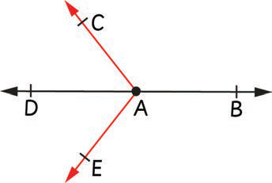

Example 1
What is the endpoint of a ray AC?

Answer
Since the point of origin of a ray is also called its endpoint.Therefore, the end point of the ray AC is point A.

Since the point of origin of a ray is also called its endpoint.Therefore, the end point of the ray AC is point A.